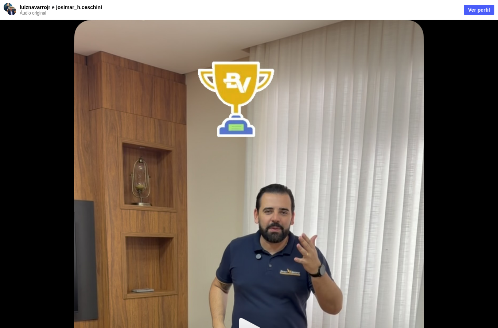
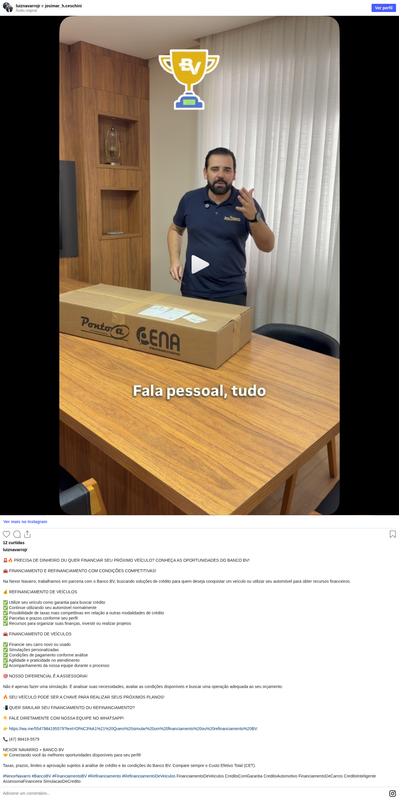

Sistema de Investigação de Marca e Identidade Online
https://www.instagram.com/reel/Det57VeMQTh/
Prioridade: MEDIUM · Cenário: B_AMBIGUOUS_COMMUNICATION · Revisão humana: PENDING
Trata-se de uma publicação em rede social promovida por correspondente/assessoria financeira ('Nexor Navarro') ofertando financiamento e refinanciamento de veículos em parceria com o Banco BV. Embora não haja tentativa deliberada de se passar pelo banco oficial (a marca própria Nexor Navarro é divulgada e o apresentador veste uniforme próprio), a veiculação utiliza a marca BV com destaque em arte e texto, direciona para WhatsApp sem apresentar CNPJ, razão social completa ou a declaração formal de correspondente bancário e contatos da ouvidoria, configurando comunicação ambígua sob a ótica da Resolução CMN nº 4.935/2021. [Revisor: CONFIRM] A publicação no Instagram pertence a uma promotora/assessoria de crédito ('Nexor Navarro' / @luiznavarrojr) ofertando serviços de financiamento e refinanciamento de veículos associados ao Banco BV ('NEXOR NAVARRO + BANCO BV'). Conforme verificado nas evidências E-TITLE, E-TXT-002, E-TXT-006 e E-SHOT-VIEWPORT, o agente deixa claro que atua em parceria e usa identidade própria, porém omite razão social completa, CNPJ e indicação de Ouvidoria, enquadrando-se em comunicação ambígua de correspondente bancário nos termos da Resolução CMN nº 4.935/2021. Mantém-se REVIEW_REQUIRED.


| Ref | Tipo | Local | Conteúdo |
|---|---|---|---|
| E-URL | domain | url | URL final: https://www.instagram.com/reel/Det57VeMQTh/ (domínio: www.instagram.com) |
| E-DISC-001 | text | search_index | Índice de busca (serper): PRECISA DE DINHEIRO OU QUER FINANCIAR SEU ... — Somos correspondente bancário do banco BV Financeira e possibilitamos o refinanciamento do seu próprio veículo. Você continua com o seu ... |
| E-SHOT-VIEWPORT | screenshot | viewport | evidence/C4f72e4d904/attempt-1/viewport.png (sha256 e863b22d5be31e08…) |
| E-SHOT-FULL | screenshot | page | evidence/C4f72e4d904/attempt-1/fullpage.png (sha256 5a596a96391822fa…) |
| E-TITLE | title | head | Instagram @luiznavarrojr - luiznavarrojr 🚨🔥 PRECISA DE DINHEIRO OU QUER FINANCIAR SEU PRÓXIMO VEÍCULO? CONHEÇA AS OPORTUNIDADES DO BANCO BV! 🚘 FINANCIAMENTO E REFINANCIAMENTO COM CONDIÇÕES COMPETITIVAS! Na Nexor Navarro, trabalhamos em parceria com o Banco BV, buscando soluções de crédito para quem deseja conquistar um veículo ou utilizar seu automóvel para obter recursos financeiros. 💰 REFINANCIAMENTO DE VEÍCULOS ✅ Utilize seu veículo como garantia para buscar crédito ✅ Continue utilizando |
| E-FOLD | text | viewport (acima da dobra) | luiznavarrojr e josimar_h.ceschini Áudio original Ver perfil |
| E-CONTACT-1 | contact | page | <https://www.instagram.com/josimar_h.ceschini/?utm_source=ig_embed&ig_rid=AQOp65bRgBAGj3Rm6aQf0ZD> |
| E-CONTACT-2 | contact | page | <https://www.instagram.com/luiznavarrojr/?utm_source=ig_embed&ig_rid=AQOp65bRgBAGj3Rm6aQf0ZD> |
| E-CONTACT-3 | contact | page | luiznavarrojr <https://www.instagram.com/luiznavarrojr/?utm_source=ig_embed&ig_rid=AQOp65bRgBAGj3Rm6aQf0ZD> |
| E-CONTACT-4 | contact | page | josimar_h.ceschini <https://www.instagram.com/josimar_h.ceschini/?utm_source=ig_embed&ig_rid=AQOp65bRgBAGj3Rm6aQf0ZD> |
| E-CONTACT-5 | contact | page | Ver perfil <https://www.instagram.com/luiznavarrojr/?utm_source=ig_embed&ig_rid=AQOp65bRgBAGj3Rm6aQf0ZD> |
| E-CONTACT-6 | contact | page | <https://www.instagram.com/reel/Det57VeMQTh/?utm_source=ig_embed&ig_rid=AQOp65bRgBAGj3Rm6aQf0ZD> |
| E-CONTACT-7 | contact | page | luiznavarrojr 451 posts · 4K seguidores <https://www.instagram.com/luiznavarrojr/?utm_source=ig_embed&ig_rid=AQOp65bRgBAGj3Rm6aQf0ZD> |
| E-CONTACT-8 | contact | page | Ver mais no Instagram <https://www.instagram.com/luiznavarrojr/?utm_source=ig_embed&ig_rid=AQOp65bRgBAGj3Rm6aQf0ZD> |
| E-CONTACT-9 | contact | page | Curtir <https://www.instagram.com/reel/Det57VeMQTh/?utm_source=ig_embed&ig_rid=AQOp65bRgBAGj3Rm6aQf0ZD> |
| E-CONTACT-10 | contact | page | Comentar <https://www.instagram.com/reel/Det57VeMQTh/?utm_source=ig_embed&ig_rid=AQOp65bRgBAGj3Rm6aQf0ZD> |
| E-CONTACT-11 | contact | page | Compartilhar <https://www.instagram.com/reel/Det57VeMQTh/?utm_source=ig_embed&ig_rid=AQOp65bRgBAGj3Rm6aQf0ZD> |
| E-CONTACT-12 | contact | page | Salvar <https://www.instagram.com/reel/Det57VeMQTh/?utm_source=ig_embed&ig_rid=AQOp65bRgBAGj3Rm6aQf0ZD> |
| E-CONTACT-13 | contact | page | 12 curtidas <https://www.instagram.com/reel/Det57VeMQTh/?utm_source=ig_embed&ig_rid=AQOp65bRgBAGj3Rm6aQf0ZD> |
| E-CONTACT-14 | contact | page | luiznavarrojr <https://www.instagram.com/luiznavarrojr/?utm_source=ig_embed&ig_rid=AQOp65bRgBAGj3Rm6aQf0ZD> |
| E-CONTACT-15 | contact | page | https://wa.me/5547984195579?text=Ol%C3%A1%21%20Quero%20simular%20um%20financiamento%20ou%20refinanciamento%20BV <https://wa.me/5547984195579?text=Ol%C3%A1%21%20Quero%20simular%20um%20financiamento%20ou%20refinanciamento%20BV> |
| E-CONTACT-16 | contact | page | #NexorNavarro <https://www.instagram.com/explore/tags/NexorNavarro/?utm_source=ig_embed> |
| E-CONTACT-17 | contact | page | #BancoBV <https://www.instagram.com/explore/tags/BancoBV/?utm_source=ig_embed> |
| E-CONTACT-18 | contact | page | #FinanciamentoBV <https://www.instagram.com/explore/tags/FinanciamentoBV/?utm_source=ig_embed> |
| E-CONTACT-19 | contact | page | #Refinanciamento <https://www.instagram.com/explore/tags/Refinanciamento/?utm_source=ig_embed> |
| E-CONTACT-20 | contact | page | #RefinanciamentoDeVeiculos <https://www.instagram.com/explore/tags/RefinanciamentoDeVeiculos/?utm_source=ig_embed> |
| E-IMG-1 | image | page (acima da dobra) | imagem alt='Post do Instagram compartilhado por @luiznavarrojr' src=https://instagram.fcgh22-1.fna.fbcdn.net/v/t51.82787-15/859395391_18142540060611858_6533023061853942118_n.jpg?stp=dst-jpg_e15_tt6&_nc_cat=111&_nc_map=urlgen_bucketless&ig_cache_key=NDAxMjExNzYwOTIxMjM (1366x1708, acima da dobra) |
| E-TXT-001 | text | page | 🚨🔥 PRECISA DE DINHEIRO OU QUER FINANCIAR SEU PRÓXIMO VEÍCULO? CONHEÇA AS OPORTUNIDADES DO BANCO BV! |
| E-TXT-002 | text | page | Na Nexor Navarro, trabalhamos em parceria com o Banco BV, buscando soluções de crédito para quem deseja conquistar um veículo ou utilizar seu automóvel para obter recursos financeiros. |
| E-TXT-003 | text | page | ✅ Agilidade e praticidade no atendimento |
| E-TXT-004 | text | page | 👇 FALE DIRETAMENTE COM NOSSA EQUIPE NO WHATSAPP! |
| E-TXT-005 | text | page | NEXOR NAVARRO + BANCO BV |
| E-TXT-006 | text | page | Taxas, prazos, limites e aprovação sujeitos à análise de crédito e às condições do Banco BV. Compare sempre o Custo Efetivo Total (CET). |
| E-TXT-007 | text | page | #NexorNavarro #BancoBV #FinanciamentoBV #Refinanciamento #RefinanciamentoDeVeiculos FinanciamentoDeVeiculos CreditoComGarantia CreditoAutomotivo FinanciamentoDeCarros CreditoInteligente AssessoriaFinanceira SimulacaoDeCredito |
| Dimensão | Sinal | Achado | Refs |
|---|---|---|---|
| VISUAL_IDENTITY | NEUTRAL | O vídeo exibe um overlay gráfico de troféu com a marca BV, mas o apresentador veste camisa polo com a identidade visual própria da Nexor Navarro. | E-SHOT-VIEWPORT E-SHOT-FULL |
| DECLARED_COMMERCIAL_IDENTITY | CONFUSION | O anunciante se apresenta como 'Nexor Navarro', porém omite CNPJ e razão social formal nos dados de contato da postagem. | E-TXT-002 E-TXT-005 |
| CORRESPONDENT_TRANSPARENCY | CONFUSION | Não há menção formal ao status regulatório de correspondente bancário nem indicação do canal de Ouvidoria da instituição financeira no texto do post, infringindo a transparência preconizada pela Resolução CMN nº 4.935/2021. | E-TXT-002 E-TXT-006 |
| INSTITUTIONAL_LANGUAGE | LEGITIMATE | O texto explicita que as taxas e aprovação estão sujeitas à análise de crédito e condições do Banco BV, e que a Nexor Navarro atua prestando assessoria/parceria. | E-TXT-002 E-TXT-006 |
| LOGO_USAGE | CONFUSION | Uso de ícone com o monograma BV inserido na arte do reel sem padronização ou governança formal explícita. | E-SHOT-VIEWPORT E-SHOT-FULL |
| SERVICE_JOURNEY | NEUTRAL | Captação de interessados para refinanciamento e financiamento de veículos direcionada para atendimento via WhatsApp. | E-TXT-004 E-CONTACT-15 |
| CONTACT_CHANNELS | NEUTRAL | Canal de WhatsApp próprio (+55 47 98419-5579) com mensagem pré-configurada para simulação de financiamento/refinanciamento BV. | E-CONTACT-15 |
| CONSUMER_CONFUSION | CONFUSION | A chamada apelativa associando diretamente a marca Banco BV e a falta de identificação cadastral completa podem gerar dúvida sobre a exata natureza da relação entre a assessoria e a instituição financeira. | E-TXT-001 E-TXT-005 E-CONTACT-15 |
Trata-se de uma publicação em rede social promovida por correspondente/assessoria financeira ('Nexor Navarro') ofertando financiamento e refinanciamento de veículos em parceria com o Banco BV. Embora não haja tentativa deliberada de se passar pelo banco oficial (a marca própria Nexor Navarro é divulgada e o apresentador veste uniforme próprio), a veiculação utiliza a marca BV com destaque em arte e texto, direciona para WhatsApp sem apresentar CNPJ, razão social completa ou a declaração formal de correspondente bancário e contatos da ouvidoria, configurando comunicação ambígua sob a ótica da Resolução CMN nº 4.935/2021.
Nenhum CNPJ ou razão social identificáveis no conteúdo coletado.
| Tipo | Valor | Ref | Contexto |
|---|---|---|---|
| domain | instagram.com | E-URL | |
| social_profile | https://www.instagram.com/reel/Det57VeMQTh/ | E-URL | |
| social_profile | https://www.instagram.com/josimar_h.ceschini/?utm_source=ig_embed&ig_rid=AQOp65bRgBAGj3Rm6aQf0ZD | E-CONTACT-1 | |
| social_profile | https://www.instagram.com/luiznavarrojr/?utm_source=ig_embed&ig_rid=AQOp65bRgBAGj3Rm6aQf0ZD | E-CONTACT-2 | |
| social_profile | https://www.instagram.com/reel/Det57VeMQTh/?utm_source=ig_embed&ig_rid=AQOp65bRgBAGj3Rm6aQf0ZD | E-CONTACT-6 | |
| social_profile | https://www.instagram.com/explore/tags/NexorNavarro/?utm_source=ig_embed | E-CONTACT-16 | |
| social_profile | https://www.instagram.com/explore/tags/BancoBV/?utm_source=ig_embed | E-CONTACT-17 | |
| social_profile | https://www.instagram.com/explore/tags/FinanciamentoBV/?utm_source=ig_embed | E-CONTACT-18 | |
| social_profile | https://www.instagram.com/explore/tags/Refinanciamento/?utm_source=ig_embed | E-CONTACT-19 | |
| social_profile | https://www.instagram.com/explore/tags/RefinanciamentoDeVeiculos/?utm_source=ig_embed | E-CONTACT-20 | |
| trade_name | @luiznavarrojr | E-TITLE | |
| https://wa.me/5547984195579?text=Ol%C3%A1%21%20Quero%20simular%20um%20financiamento%20ou%20refinanciamento%20BV <https://wa.me/5547984195579?text=Ol%C3%A1%21%20Quero%20simular%20um%20financiamento%20o | E-CONTACT-15 | ||
| partnership_declaration | em parceria com | E-TITLE | Na Nexor Navarro, trabalhamos em parceria com o Banco BV, buscando soluções de crédito para quem deseja conquistar um veículo ou utilizar seu automóvel para obter recursos financeiros. |
Mapeamento indicativo para apoio à auditoria. Não constitui conclusão regulatória; a decisão definitiva pertence à auditoria.
Fonte: NORMATIVE
Art. 14. O contrato de correspondente deve estabelecer: [...] II - vedação à utilização, pelo contratado, de logomarca ou de outros atributos que sejam similares aos adotados pela instituição contratante em suas agências, postos de atendimento, sítio eletrônico na internet, aplicativo ou outras plataformas de comunicação em rede;
Hipótese: Uso de logomarca, uso excessivo/desproporcional ou de atributos similares aos adotados pela contratante em seus canais. A norma disciplina correspondentes contratados; o responsável não foi identificado como correspondente.
Evidência observada: E-SHOT-FULL E-SHOT-VIEWPORT
Informação faltante:
Fonte: NORMATIVE
Art. 14. O contrato de correspondente deve estabelecer: [...] III - divulgação ao público, pelo contratado, de sua condição de prestador de serviços à instituição contratante, identificada pelo nome com que é conhecida no mercado, com descrição dos produtos e serviços oferecidos e canais de contato da instituição contratante, inclusive de sua ouvidoria, em local visível, em destaque e em formato legível, por meio de: a) sítio eletrônico do correspondente na internet, acessível na página inicial; b) aplicativo e outras plataformas de comunicação em rede do correspondente; [...]
Hipótese: Divulgação ao público da condição de prestador de serviços/parceria ausente, insuficiente, ambígua ou sem destaque. A norma disciplina correspondentes contratados; o responsável não foi identificado como correspondente.
Evidência observada: E-CONTACT-15 E-TITLE E-TXT-001 E-TXT-002 E-TXT-005 E-TXT-006
Informação faltante:
Fonte: NORMATIVE
Art. 3º O correspondente atua por conta e sob as diretrizes da instituição contratante, que assume inteira responsabilidade pelo atendimento prestado aos clientes e usuários por meio do contratado.
Evidência observada: —
Se o responsável não for correspondente contratado, os indícios podem caracterizar uso indevido de marca ou fraude, fora do escopo da Res. 4.935: avaliar encaminhamento às áreas jurídica/segurança.
Limitações: requisitos contratuais/internos não fornecidos: mapeamento limitado ao texto normativo
Decisão: CONFIRM → REVIEW_REQUIRED / MEDIUM
A publicação no Instagram pertence a uma promotora/assessoria de crédito ('Nexor Navarro' / @luiznavarrojr) ofertando serviços de financiamento e refinanciamento de veículos associados ao Banco BV ('NEXOR NAVARRO + BANCO BV'). Conforme verificado nas evidências E-TITLE, E-TXT-002, E-TXT-006 e E-SHOT-VIEWPORT, o agente deixa claro que atua em parceria e usa identidade própria, porém omite razão social completa, CNPJ e indicação de Ouvidoria, enquadrando-se em comunicação ambígua de correspondente bancário nos termos da Resolução CMN nº 4.935/2021. Mantém-se REVIEW_REQUIRED.
| Tema | Severidade | Questionamento | Refs |
|---|---|---|---|
| domain_attribution | MEDIUM | Responsável pela página não identificado; a conclusão sobre a marca não pode ser atribuída a um estabelecimento específico. | E-URL |
| Fonte | Consulta / hipótese | URL original | Título / trecho |
|---|---|---|---|
| serper | ("correspondente BV" OR "Somos correspondente" "Banco BV" OR "correspondente" "bv financeira") financiamento -site:bv.com.br -site:bancobv.com.br -site:bvfinanceira.com.br -site:bvinvestimentos.com.br -site:napista.com.br -site:bvopen.com.br -site:meufinanciamentosolar.com.br -site:votorantim.com.br -site:vam.com.br -site:reclameaqui.com.br -site:jusbrasil.com.br -site:jus.br H3-service:correspondente-vinculo | https://www.instagram.com/reel/Det57VeMQTh/ | PRECISA DE DINHEIRO OU QUER FINANCIAR SEU ... Somos correspondente bancário do banco BV Financeira e possibilitamos o refinanciamento do seu próprio veículo. Você continua com o seu ... |
Original: https://www.instagram.com/reel/Det57VeMQTh/
Final: https://www.instagram.com/reel/Det57VeMQTh/
| Artefato | Caminho | SHA-256 | Bytes |
|---|---|---|---|
| screenshot_viewport | evidence/C4f72e4d904/attempt-1/viewport.png | e863b22d5be31e08eb68b0197d87573f362e54f622338b532d7baae664163fb1 | 582778 |
| screenshot_full | evidence/C4f72e4d904/attempt-1/fullpage.png | 5a596a96391822fa1aac4f6d3d98448ba0e8b8c0ef39478ea9717b7634420ad3 | 1663542 |
| html | evidence/C4f72e4d904/attempt-1/page.html.txt | 314b5d5d1bc449107e36b5df4461292d06f1e79e18c9f5fe6b8fde33dc789e0e | 273073 |
| text | evidence/C4f72e4d904/attempt-1/text.txt | 4b200254f83903cabb1825be144f075b7a79072a95bbd1e691b326d3a8167ee6 | 2264 |
| page_data | evidence/C4f72e4d904/attempt-1/page.json | 600c51c4af8ccb2b6d1efe957463beb366455eef466c53f132243360cf5ce49b | 15172 |
| Quando | De | Para | Nota |
|---|---|---|---|
| 2026-11-25T18:12:10+00:00 | DISCOVERED | QUEUED | prioritised (score 1.0) |
| 2026-11-25T19:25:17+00:00 | QUEUED | COLLECTING | |
| 2026-11-25T19:25:23+00:00 | COLLECTING | COLLECTED | |
| 2026-11-25T19:25:23+00:00 | COLLECTED | ANALYZING | |
| 2026-11-25T19:26:14+00:00 | ANALYZING | REVIEWING | |
| 2026-11-25T19:26:22+00:00 | REVIEWING | COMPLETED |